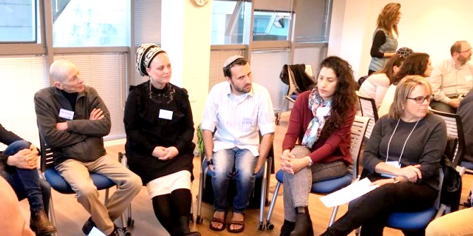

In January 2019, the fellows of the Regional Leadership and Social Leadership programs at the Mandel Center for Leadership in the North met with visiting fellows of the Mandel Executive Leadership Program for Federation and Jewish community professionals from the United States, led by Professor Ted Sasson. As part of their program, the American fellows had studied the complexities of Israeli society. The goal of the visit to Israel was to learn in greater depth about the relations between different populations, and about new possibilities and social enterprises and activities that are creating partnerships and opportunities for social change in northern Israel.
Following an experiential introductory session, the fellows of the Executive Leadership Program met with Professor David Dery, director of the Mandel Center for Leadership in the North, who described the programs and the work of the Center, and raised questions that challenge paradigms of thinking about issues of equality and the periphery.
Next, the fellows of the Israeli and American programs split up into two mixed groups and embarked on a day of site visits to two northern cities with diverse populations: Akko and Upper Nazareth.

In Akko, an educational tour introduced them to the city, its complexities, and its history, and presented future trends that offer opportunities for growth and change. The fellows met with leading figures in the city, and were introduced to the entrepreneurial work of the Ma’aseh nonprofit organization, which operates a mixed youth club in the city for Arabs and Jews. This was followed by a discussion that explored questions concerning coexistence between the different population groups in Akko.
In Upper Nazareth, the fellows met with members of an urban kibbutz who lead cultural encounters, study groups, and partnerships on social issues, with the aim of creating an engaged and diverse community and facilitating dialogue between different population groups in the city. The activities of the kibbutz focus on the Atzmon School, where its members work as part of the school’s educational faculty.
After the site visits, the fellows took part in discussion groups in which they processed their experiences and learning, and formulated questions for future study. The seminar closed with mutual expressions of desire to continue collaboration between the Mandel Center for Leadership in the North and the Mandel Executive Leadership Program in the United States.
{kind=link}